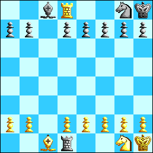

Problem of the Month (July 1999)
This month we investiate fairy chess endgames. In chess, it is well known that under normal circumstances, White needs (in addition to his King of course) a Queen, a Rook, 2 Bishops, or a Bishop and Knight to mate a lone Black King. But what about other possible pieces? Can White mate with an additional piece that moves like a king? How about a Rook that moves no more than 2 squares at a time? How many Rooks that only move 1 square at a time are needed? Feel free to invent your own pieces.
A Rook has 28 different moves (7 translations up, 7 down, 7 left, and 7 right). What is the fewest number of moves that a piece can have and still mate a lone King?
Here are some miscellaneous chess quickies:
Quickie #1:
Find a legal chess position in which we can conclude that at least one of the players has castled, but we don't know which.
Quickie #2:
Place a White King, White Pawn, and Black King on an n x n chess board at random. Let p(n) be the probability that if White moves first, White can win (that is, White can safely promote the pawn). As n→∞, p(n) converges to what value?
Quickie #3:
Who wins this 5x5 mini-chess game? Can you prove it is a tie?

ANSWERS
There weren't many responses this month. White can mate with an additional King, or with a Rook that moves no more than 2 squares at a time. The strategy is fairly complicated. I can also mate with 3 additional Rooks that move only 1 square at a time. Can any one do it with 2 such pieces?
The smallest number of moves that a piece can have and mate is probably 6. One piece that works is a King that cannot move diagonally backward. To mate, get the King and modified King to the bottom of the board, then use the 2 Kings vs. 1 King strategy referred to above.
This month's problem comes from Ed Pegg.
Quickie #1:
Here is such a position:

Each side has a promoted Rook. Since the Pawns did not pass each other on the c-file, at least one Pawn made three captures: off the c-file, back on to the c-file, promote on the d-file. Now each side's Queen's Rook and King's Bishop were captured on the back rank and not on the d-file. Therefore the three pieces captured must have been the Queen, a Knight, and the King's Rook. If A captured B's Rook on the d-file, then B must have castled, for his King and Rook have no other way to switch places.
Quickie #2:
John Hoffman thinks the answer is larger than 3/4, but smaller than 7/8. He came up with a very complicated integral for computing the exact probability.
Alan Williams, who suggested this problem, thinks the answer is 149/192. A Monte Carlo simulation with billions of trials supports this conjecture. And finally in 2001 Ulrich Schimke proved it! Here is his proof, written up as a text file.
Quickie #3:
I'm pretty sure this game is a tie, and the state space is just small enough that someone might prove it with brute force. But no one has yet.
If you can extend any of these results, please
e-mail me.
Click here to go back to Math Magic. Last updated 4/20/01.